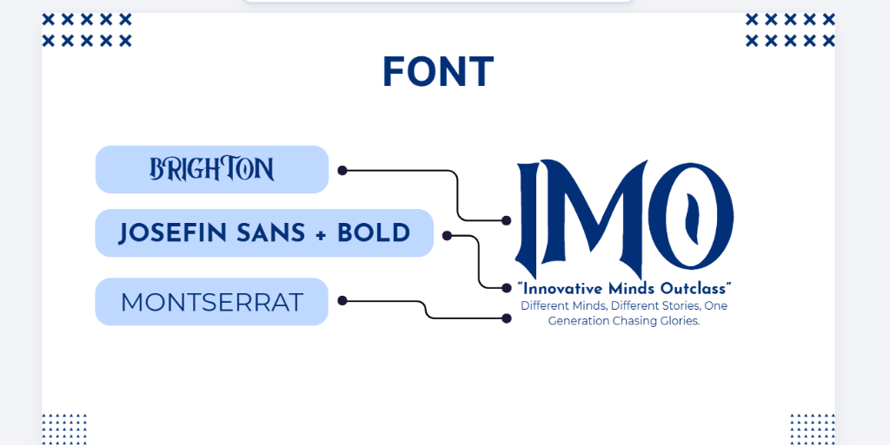
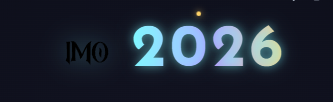
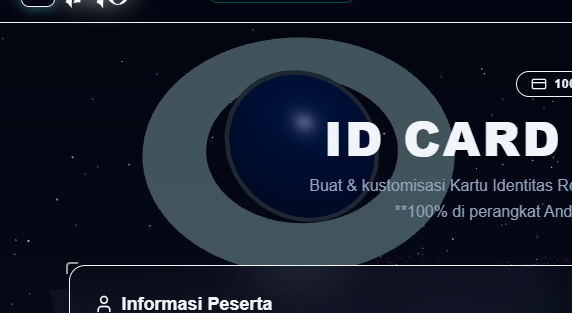

Portal IMO 2026 telah dioptimasi secara ekstensif menggunakan Next.js dan Three.js dengan pendekatan High-Performance Rendering. Berikut adalah hasil evaluasinya:
Float32Array) menekan beban *garbage collector* secara drastis, mempertahankan framerate stabil 60 FPS meskipun dengan jumlah 40.000 partikel.mounted pada sisi klien ("use client"), sehingga halaman dasar langsung dirender oleh SSR tanpa *Hydration Mismatch*. Latar belakang otomatis menyesuaikan densitas piksel rasio perangkat genggam (dpr={[1, 1.5]}) agar tidak menyebabkan baterai ponsel *overheating*.Berikut adalah panduan visual untuk menggunakan berbagai fitur interaktif di portal IMO 2026.
Saat Anda pertama kali mengakses portal, layar akan menampilkan animasi Inisialisasi Sistem (*Establishing Uplink*). Setelah selesai, klik tombol MULAI PENJELAJAHAN di area hero untuk memasuki Hub Utama.

Navigasi ke berbagai modul dapat diakses langsung secara tersentralisasi melalui Pusat Penjelajahan.

Salah satu modul paling interaktif bagi LO atau anggota grup adalah fitur pembuatan Tanda Pengenal (ID Card).

Portal menyediakan modul rekapitulasi data dari basis data (termasuk *backend* Supabase atau sumber CSV/Sheets eksternal).
- Selamat Menjelajah! Sistem IMO 2026 Online -